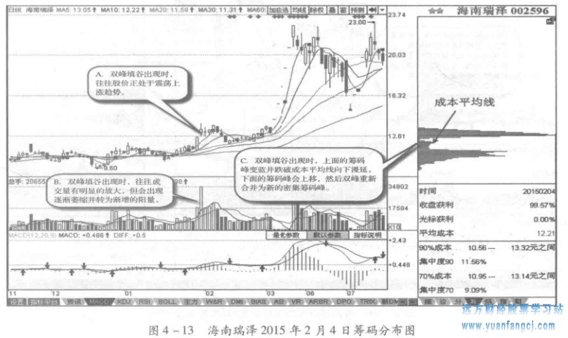
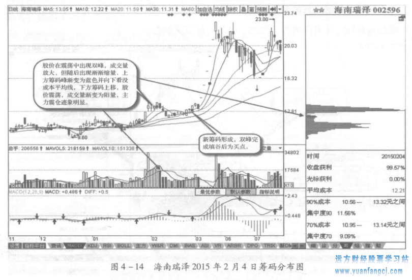

主力震仓的筹码分布形态之双峰填谷
原文: http://www.yuanfangcj.com/archives/18779.html
当股价运行到一定位置，在筹码分布图上会发现上下各有一个密集筹码峰，处于两个筹码峰中间位置的即为峡谷，形成上有蓝色的套牢筹码、下有获利的红色筹码，股价在此震荡，为主力在震仓，目的是让上方的套牢盘割肉出局，下方的获利盘获利抛出。而当筹码在此位置重新聚集，上方和下方的密集筹码峰逐渐减小直至消失，在双峰中间峡谷处形成新的密集峰时，这种由上下两个筹码峰逐渐消失、中间形成新密集峰的过程称之为双峰填谷。因此，也是一种买入形态。
形态特征

图4-13是海南瑞泽2015年2月4日筹码分布图，其形态特征可以从以下三点分析确认：
- 双峰填谷出现时，往往股价正处于震荡上涨趋势。
- 双峰填谷出现时，往往成交量有明显的放大，但会出现逐渐萎缩并转为渐增的阳量。
- 双峰填谷出现时，上面的筹码峰变蓝并跌破成本平均线向下漫延，下面的筹码峰会上移，然后双峰重新合并为新的密集筹码峰。
实战案例
海南瑞泽（002596)在震荡上行过程中，于2015年2月4日形成双峰形态，此时成交量明显放大，其后逐渐缩减，上方筹码渐变为蓝色套牢盘。当向下吞没平均成本线继续向下漫延时，下方的红色筹码峰开始上移，表明上方的浅套盘及下方的少许获利盘开始纷纷卖出，从而形成新的筹码峰，这说明主力已完成双峰填谷，震荡仓洗盘已结束，投资者可在此时买入。如图4-14中所示：

实战要点
- 双峰填谷出现时，只有下方的红色筹码渐渐向上吞没成本平均线并渐渐吞噬上面蓝色筹码峰时，才说明主力洗盘即将结束，股价回升，新的筹码密集峰将形成。
- 双峰填谷出现时，如果上方的筹码在吞没成本平均线后，下方的筹码没有上移，说明获利盘未卖出，双峰填谷行情仍将继续，股价会继续下跌。
- 双峰填谷出现时，如果成交量过大，则说明盘中抛压较大，其后股价将继续震荡走低，填谷行情将有可能失败。